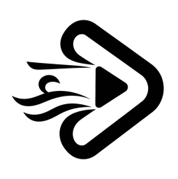

Mechanism of action
Make a mechanism easier to follow through source-based visual storytelling, built for scientific education and your review pathway.
Explore a sample scene
DHEE.DHEE STUDIO / PHARMA & LIFE SCIENCES
MOA and MOD explainers for Medical Affairs—shaped from approved scientific references, with human creative QA and review points designed around your existing process.
Scientific animation takes more than beautiful frames. It needs source review, a clear story, a visual plan, production, and the right internal reviewers—often across teams that already have full calendars.
When those steps happen in disconnected queues, important science can arrive after the moment it was meant to support. A managed production path gives the story and its review points a place to move together.
Project timelines and review cycles vary by scope, source material, and your organization’s review process.
Built around the question to answer
Start with the flagship mechanism. Extend the same governed production approach across the work your scientific teams already need to explain.
Make a mechanism easier to follow through source-based visual storytelling, built for scientific education and your review pathway.
Explore a sample sceneExplain a novel platform, therapeutic approach, or research program to the people considering what comes next.
Shape a science storyBuild focused modules that help teams revisit approved scientific concepts with clear, consistent visual language.
Discuss a training moduleAdapt a reviewed scientific story for event screens, a poster companion, or a QR-linked page—against an agreed calendar.
Plan an event assetTranslate reviewed science into approachable, captioned, language-ready explainers for the intended audience.
Discuss audience needsKeep teams aligned around a scientific narrative with reusable video pieces that can be reviewed and refreshed over time.
Plan a first batchMedical Affairs keeps the scientific authority
DHEE brings production into a managed workflow. Your scientific and regulatory teams retain control over evidence, claims, review, and approval.
DHEE says client material is handled as confidential production input, used for agreed work, and not used as public proof without permission. Discuss any additional data-handling requirements before sharing sensitive material.
DHEE trust approachBefore delivery, DHEE checks language, claims, pacing, visual consistency, captions, format specs, and obvious AI errors. Your reviewers remain the authority on scientific accuracy.
Define source references, AI-use disclosure, version labels, and reviewer checkpoints at kickoff. Align the plan with your internal AI policy and applicable requirements.
Assets can be prepared for your existing Medical, Legal, and Regulatory review. DHEE does not provide MLR approval or replace your organization’s review process.
IMPORTANT “Review-ready” describes preparation for your review—not regulatory approval, clinical evidence, or a compliance guarantee.
A managed, AI-assisted video studio
DHEE is not a self-serve video generator. Your team shares source material and subject-matter context; DHEE manages scripting, visual direction, editing, motion, captions, format adaptations, localization support, and human QA.
Explore DHEE capabilitiesShare approved references, audience, claims, and the scientific question the film must clarify.
Shape the narrative and visual approach so reviewers can react before full production.
DHEE uses its managed studio workflow and custom video engine; your team does not manage prompts, seats, or generation credits.
Review the claims, language, pacing, captions, and agreed formats with your team before handoff.
Approved scientific references · audience context · claim owners · review requirements
DHEE PREPARESStory and visual direction · AI-assisted video production · human QA · reviewed outputs and agreed formats
Evaluate the direction first
DHEE’s public sample offer is a short concept preview—not a finished 30–45 second MOA film. It includes a 5–10 second sample scene, a hook or title frame, visual direction, a format recommendation, and a note on what could come next.
Request a sample sceneSamples are limited and subject to fit and capacity. Share public or approved source material; agree data handling before sending confidential scientific material.
Before the first science review
Clear boundaries make the first conversation more useful—for your Medical Affairs lead, scientific reviewers, and production partners.
No. DHEE describes itself as a managed, AI-assisted studio. DHEE handles the production work; your team provides source material, expertise, and review.
No. The public sample offer is a 5–10 second concept scene with a hook or title frame, visual direction, a format recommendation, and a suggested next step. A full 30–45 second film needs its own scope and review plan.
No. DHEE provides human creative QA and can prepare work for your review process. Your scientific, Medical, Legal, and Regulatory reviewers retain approval authority.
Share a public structure ID or approved reference in the sample request so DHEE can assess the fit and production scope. Confirm scientific 3D requirements before committing; do not send confidential data through a public form.
No fixed timeline is stated here. Timing depends on the scientific scope, source readiness, reviewer availability, and DHEE capacity. Agree milestones before production begins.
DHEE’s public trust page describes client material as confidential production input, used for agreed work and not used as public proof without permission. Discuss any additional infrastructure, retention, or policy requirements before sharing sensitive material.
START WITH ONE SCIENTIFIC QUESTION
Bring one approved source and the audience you need to reach. DHEE can help shape a sample direction before you scope the full film.
A sample is a concept preview; scientific claims and mechanisms require client review.